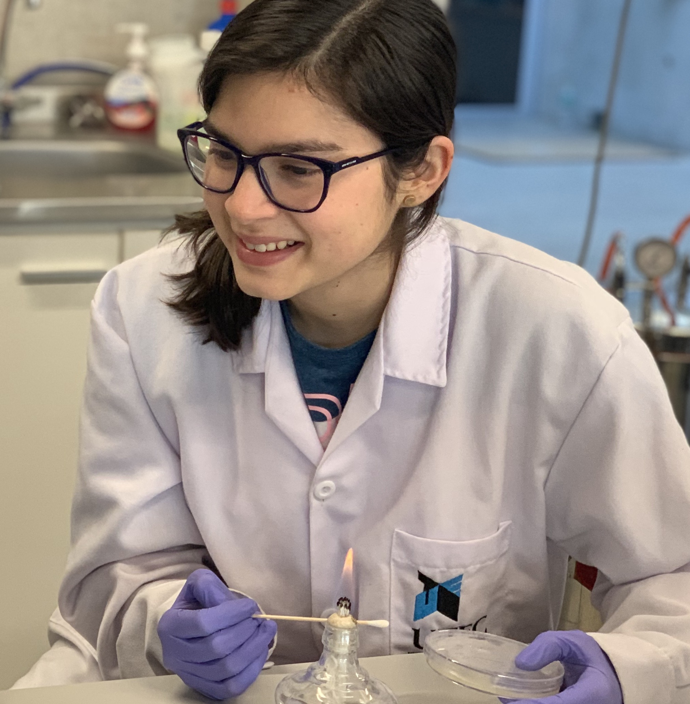

Valeria Márquez
🔬 🧬
¡Holaa! Me llamo Valeria Márquez, estoy en 8vo ciclo y pertenezco al décimo superior de Bioingeniería. Me considero una persona responsable, observadora, proactiva y muy decidida. A lo largo de mi carrera, he podido pertenecer a la directiva de BioUTEC, crear el capítulo de EMBS, ser coordinadora de Journal Club UTEC. Me encanta practicar deportes o jugar videojuegos, de hecho formo parte del equipo de futsal y de judo de la universidad. Académicamente, he logrado desarrollar diversos proyectos e, incluso, hacer una pasantía en un laboratorio en Alemania como parte del programa REPU. Siempre me he caracterizado por participar activamente en iniciativas que ayuden a mejorar el ambiente universitario en UTEC, y esta no será la excepción.
- Carrera: Bioingeniería
- Código: 2017-1